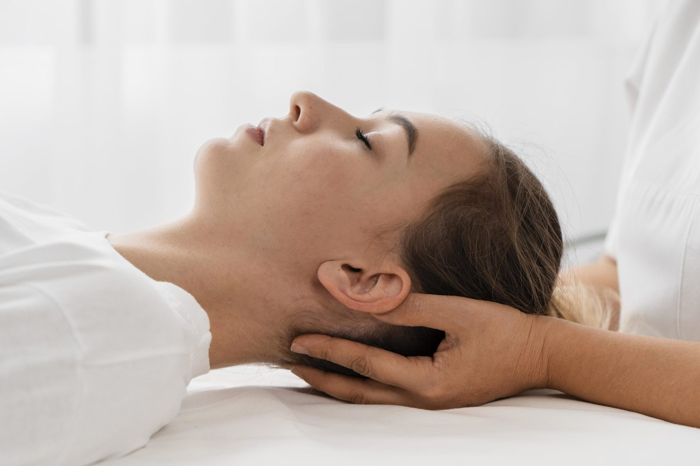
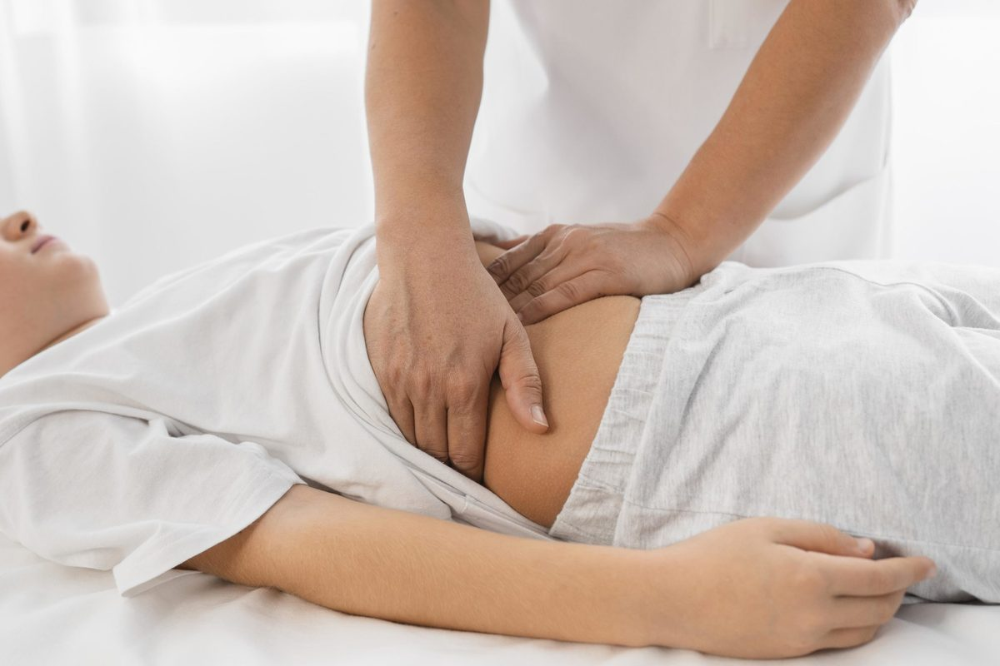
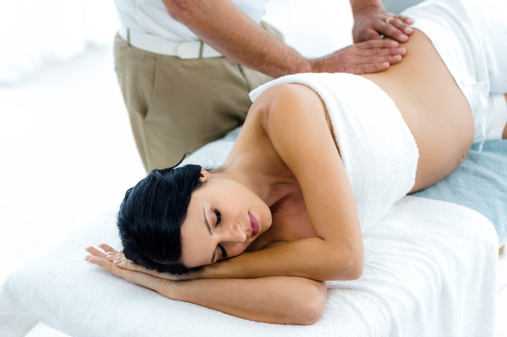
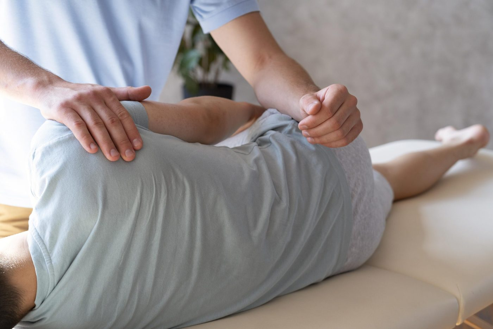
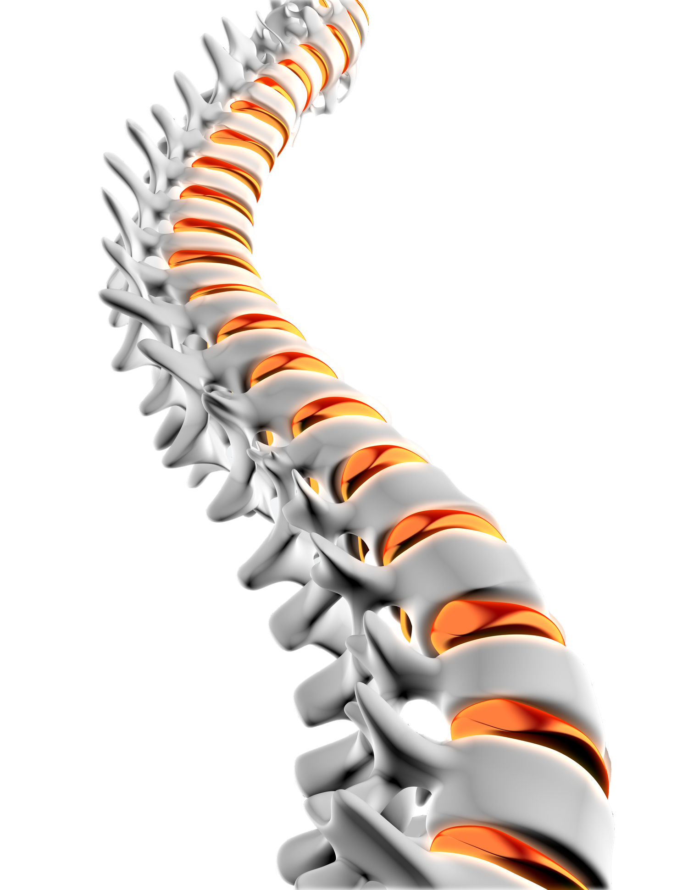
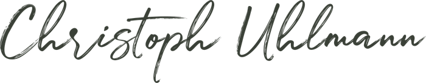
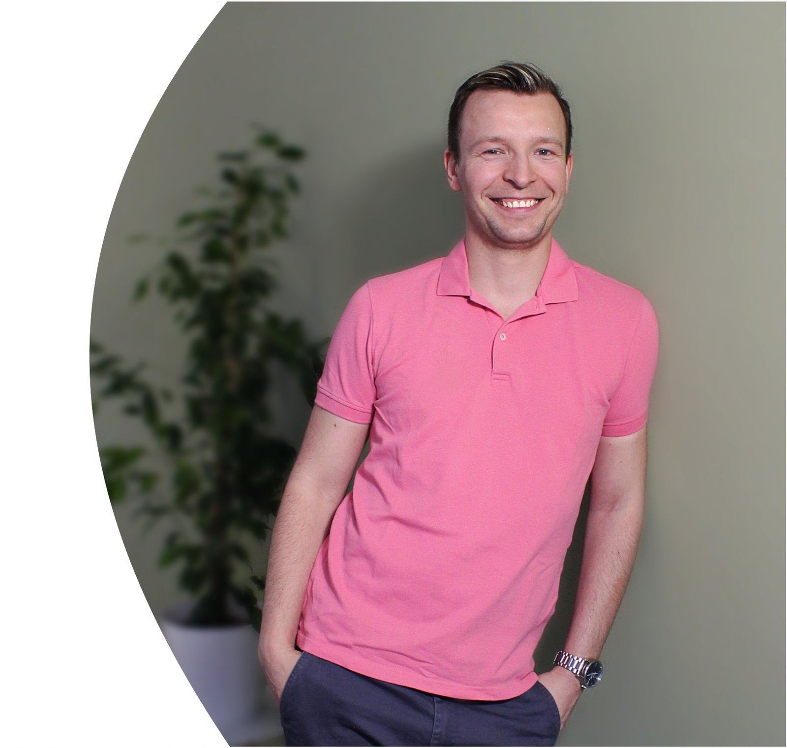

Osteopathie
Ganzheitliche manuelle Behandlung von Funktionsstörungen und Bewegungseinschränkungen — für mehr Mobilität und Wohlbefinden.

Ganzheitliche Osteopathie und Chiropraktik in Limbach-Oberfrohna — für Erwachsene, Schwangere, Kinder und Säuglinge. Ich helfe Ihrem Körper, ins Gleichgewicht zurückzufinden.
In meiner Praxis am Johannisplatz behandle ich Sie ganzheitlich und individuell. Im Mittelpunkt steht der ganze Mensch — nicht nur das Symptom. Mit fundierter Ausbildung in Osteopathie, Chiropraktik und Physiotherapie suche ich die Ursache Ihrer Beschwerden und unterstütze die Selbstheilungskräfte Ihres Körpers.
Vier Schwerpunkte — abgestimmt auf Ihre Lebenssituation und Ihre Beschwerden.
Ganzheitliche manuelle Behandlung von Funktionsstörungen und Bewegungseinschränkungen — für mehr Mobilität und Wohlbefinden.

Sanfte Behandlung bei Schlafproblemen, Koliken, Schädelasymmetrien oder Unruhe — speziell für die Kleinsten.

Unterstützung für einen körperlich angenehmen, schmerzfreien Verlauf — gute Mobilisierung für Mutter und Kind.

Gezielte manuelle Behandlung des Bewegungsapparats — Blockaden lösen, Gelenkfunktion wiederherstellen, Schmerzen lindern.


OsteopathieDer Osteopath sucht und behandelt Funktionsstörungen, die mit Bewegungseinschränkungen einhergehen und in den verschiedenen Geweben des Körpers Gesundheit und Wohlbefinden beeinträchtigen. Grundlage ist ein ganzheitliches Körperverständnis, verbunden mit genauen Kenntnissen der Anatomie. Es wird versucht, dem Körper verloren gegangene Mobilität zurückzugeben und so die Selbstheilungskräfte anzuregen, um ihn ins Gleichgewicht zurückzuführen.
„Osteopathie ist … einen Teil des ganzen Systems so zu korrigieren, dass die Lebensflüsse besser fließen und sich der Körper wieder selbst regulieren kann.“
A.T. Still
Eine manuelle Behandlungsform, die sich auf Diagnose, Behandlung und Prävention von Funktionsstörungen des Bewegungsapparates konzentriert — insbesondere der Wirbelsäule. Durch gezielte Handgriffe (Justierungen) werden Blockaden gelöst, um Gelenkfunktionen wiederherzustellen, Schmerzen zu lindern und die Selbstheilungskräfte zu fördern.
Zuerst erfolgt eine umfangreiche Untersuchung und Anamnese.
Ich entscheide, ob eine Behandlung angebracht ist oder eine ärztliche Abklärung nötig erscheint.
Falls geeignet, behandle ich Sie anhand meiner Untersuchungserkenntnisse.


Christoph Uhlmann — Heilpraktiker, Osteopath und Physiotherapeut. Seit 2021 behandle ich in meiner eigenen Praxis am Johannisplatz in Limbach-Oberfrohna.
Abitur
Physiotherapeut
Bachelor of Science für Rehabilitations-, Präventions- und Fitnesssport an der TU Chemnitz
Heilpraktiker
Zertifizierter Therapeut für ganzheitliche Chiropraktik und Manuelle Gelenktherapie
Zertifizierter HWS- und Atlas-Therapeut
6-jährige Osteopathieausbildung an der Still Academy
Besondere Inhalte der Ausbildung neben viszeraler, parietaler und cranialer Osteopathie:

Buchen Sie Ihren Wunschtermin bequem online — rund um die Uhr.
Zur Online-TerminbuchungSchreiben Sie mir — ich melde mich schnellstmöglich zurück.
Vereinbaren Sie jetzt Ihren Termin — online oder telefonisch. Ich freue mich auf Sie.